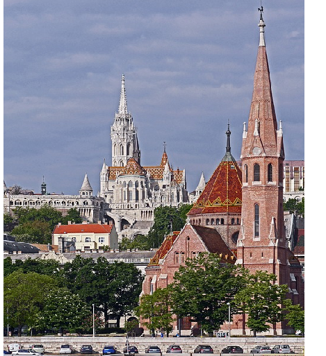
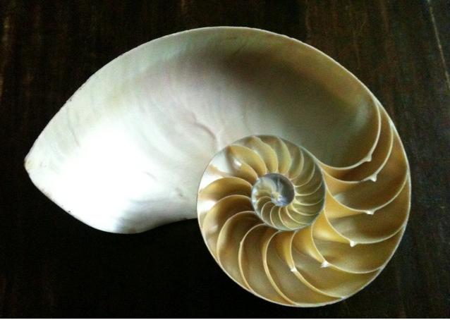

Nhớ về ngôi nhà của bố mẹ ngày xưa
Nhà - Ao - Vườn giai đoạn 1950-1980
Quê hương nơi gắn bó nhiều kỉ niệm thời thơ ấu
Nhớ về quê, nơi ông bà, bố mẹ sinh sống và nuôi dưỡng mình. Càng ngẫm nghĩ càng thấy ngạc nhiên và tự hào: bố mẹ đã quy hoạch, thiết kế rồi xây dựng nên một khu ở tuyệt vời.
Đó là một khu nhà đẹp, tọa trên một nền nhà được tôn cao hẳn lên so với mọi gia đình xung quanh. Phía Tây nhìn ra ao, bờ ao là đường làng dẫn ngay ra sân Đình và xa nữa là cánh đồng lúa (cánh Dộc) giáp với thôn Quyến, thôn Vải.
Một tư liệu quý
HỒI KÝ CỦA BỐ TÔI – CỤ NGUYỄN VĂN CẬT

Khi biết tin qua email, anh trai Nguyễn Ngọc Khánh còn lưu giữ được tập hồi kí viết tay của bố, tôi mừng như bắt được vàng. Những trang hồi kí này là những kỉ vật vô giá thế hệ trước để lại cho chúng tôi. Tôi vội nhờ anh chụp ảnh lại để lưu giữ, rồi gõ thành văn bản đưa lên web cho mọi người tiện đọc.
Bản hồi kí này đã cho tôi biết thêm một vài thông tin mà chúng tôi chưa rõ. Cụ Sen, bà nội tôi mất năm 1942. Cụ được gia đình đưa lên bệnh viện Phủ Doãn trên Hà nội chữa bệnh. Tập hồi kí không đề cập tới ông nội, nhưng qua câu chuyện “tình” của bố mẹ, tôi có linh cảm ông nội tôi mất trước khi bố mẹ tôi cưới nhau vài năm. Cô ruột thứ hai, Nguyễn Thị Bướm, đi lấy chồng sau năm bố tôi trốn thoát khỏi trại giam Thái bình về quê năm 1950.
Để giữ lại đúng văn phong của bố, khi gõ máy cho dễ đọc và đăng lên web, tôi chỉ sửa các lỗi chính tả và các câu chưa rõ nghĩa. Các hình ảnh, câu ca và cách ví von của cụ tôi đều giữ lại đúng theo nguyên bản.
Thật may mắn! Anh Nguyễn Ngọc Khánh còn lưu giữ được những trang hồi kí viết tay của cụ. Tiêu đề phía trên cùng quyển hồi kí là do bác Khánh thêm vào. Bắt đầu từ “Một hôm tôi đi họp về thì trời vừa xẩm tối…” là những dòng chữ viết tay của cụ.
Mừng thọ bà Thiều 91 tuổi năm 2011

Cô ruột Nguyễn Thị Hồ vừa ra đi, bà thọ 94 tuổi
Chúng tôi nhận được tin dữ từ anh Dũng dưới quê và ngay sau đó là từ cô Thái, hiện đang ở với các cháu tại Sài gòn: bà Nguyễn Thị Hồ, cô ruột tôi vừa ra đi sáng ngày 11-8-2021.
Tin đó với tôi khá đột ngột. Tôi đang dự định hết đợt dịch giã này sẽ rủ chú Vượng cùng chú Huân về quê thăm ông bà.
Vừa tròn 1 năm, hè năm ngoái tôi về Thái bình sống cùng ông bà 5 ngày, sửa lại khu bếp cho 2 cụ. Vẫn biết cả hai ông bà tuổi đã cao, đi lại khó khăn vì đau khớp, nhưng thấy 2 cụ vẫn giữ nếp sinh hoạt điều độ từ giờ giấc ăn uống, đến việc tập thể dục buổi sáng, buổi chiều hàng ngày. Tinh thần 2 cụ luôn lạc quan, thương các con cháu ở xa vất vả… Tôi vẫn thầm mong các cụ sẽ thọ đến trăm tuổi…
Cho đến thời điểm này bà là người sống thọ nhất dòng họ Nguyễn thôn Hòa, Hòa tiến, Hưng hà, Thái bình.
Bà ra đi đúng thời điểm cả nước đang giãn cách vì dịch Covid, các con các cháu ở xa không về tiễn đưa được. Tang lễ cụ được gia đình và địa phương tổ chức chu đáo, trọng thể. Cầu mong bà được thảnh thơi yên nghỉ nơi chín suối.
Video Lễ tang bà Nguyễn Thị Hồ - cô ruột - Thọ 94 tuổi.
Video Lễ 49 ngày bà.
Các con cháu về dự giỗ bách nhật bà Nguyễn Thị Hồ


Hơn 50 năm trước
Nhóm chúng tôi là những sinh viên toán (matematikus) trường Đại học Eötvös Loránd (ELTE) khóa học 1969-1974. Ngôi trường có bề dày lịch sử gần 400 năm, là cơ sở giáo dục đại học liên tục hoạt động lâu đời nhất ở Hungary. Nó nổi tiếng thế giới bởi những đóng góp to lớn cho sự phát triển của khoa học, với 5 người được giải thưởng Nobel và gần đây nhất, đầu năm 2021, cựu sinh viên toán, Lovász László vừa được trao giải Abel, một giải thưởng về toán học tương đương với giải Nobel khoa học.KỈ NIỆM VỀ NHỮNG NĂM THÁNG HỌC TẬP TRÊN ĐẤT HUNGARY
• Ngày 12-8-1968 nhóm lưu học sinh Việt nam đầu tiên sang Hungary học tập năm 1968, khoảng 100 người, tới nhà ga Keleti. Chúng tôi được các em thiếu nhi đeo khăn xanh, mang trống tới nhà ga Keleti, Budapest chào đón. Lứa “thiếu niên” 17, 18 tuổi gầy gò bé nhỏ chúng tôi chẳng cao to hơn lứa thiếu nhi chủ nhà 11, 12 tuổi ăn mặc chỉnh tề tươi cười, xếp hàng gõ trống đón chúng tôi trên sân ga. Thật là một kỉ niệm rất đẹp 51 năm trước, nó mãi mãi không phai mờ ghi nhận tấm lòng hào hiệp, hiếu khách và cách thể hiện tình cảm của nước bạn Hungary với Việt nam mà đại diện là lứa học sinh chúng ta lúc đó.
• Tròn 50 năm sau, đúng ngày 12-8-2018, lớp Toán T1 (tên gọi lớp Toán năm học tiếng Hung ở Nemzetközi Előkészitő Intézet) cũng tổ chức gặp mặt nhau để kỉ niệm nửa thế kỉ ngày sang Hungary học tập, tại khu Sinh thái Ecopark, cách trung tâm HN khoảng 20km. Lần này có Phan Quốc Sỹ ở Sài gòn bay ra và Nguyễn văn Khoát ở Thanh hóa về dự. Các bạn ở Hà nội có 8 người: Nguyễn Ngọc Cừ, Nguyễn Hữu Chiến, Lê Trung Hùng (Hùng B), Bùi Liêm, Đoàn Thọ Nam, Đoàn Phúc, Nguyễn Quý Phương, Phạm Thế Quế và một số phu nhân các quý ông đi cùng. Các anh Tuyến, Thanh, Hùng A cũng có mặt tại Hà nội nhưng do người thì bận, người thì ốm nên không đi cùng nhóm sang khu Ecopark ngày 12-8 được. Tuy nhiên tất cả mọi người vẫn gặp được nhau trước đó, rất hồ hởi nói chuyện hỏi thăm nhau sau nhiều năm không gặp mặt.
• Năm học ngoại ngữ, mọi thứ ở nước bạn đều xa lạ với chúng tôi. Các kiến thức của chúng tôi về lịch sử, văn hóa, phong tục tập quán của nước Hung là con số KHÔNG. Tất cả mọi việc từ học tập, ăn ở, đi lại, giao tiếp đều được cô giáo chủ nhiệm, người trực tiếp dạy tiếng Hung cho chúng tôi, bà giáo Kovács Ferencné (chúng tôi thường gọi như vậy mặc dù cô tầm 40 tuổi) hướng dẫn chỉ bảo. Cô giáo gắn bó, thân thiện với chúng tôi, ngoài việc dạy tiếng Hung, cô giáo còn trực tiếp dẫn chúng tôi đi thăm quan các công trình văn hóa, nghệ thuật, các nhà bảo tàng như Szépmüvészeti Múzeum, Nemzeti Múzeum hay tới nhà tắm hơi nổi tiếng Széchenyi Fürdő, đi dã ngoại vào rừng, đi du lịch lên núi bằng tàu bánh răng (budapesti fogaskerekű vasút) giữa các nhà ga trên núi do thiếu nhi phụ trách ( Gyermekvasút állomások). Với tôi trong suốt 10 năm học phổ thông ở trong nước chưa có giáo viên nào dạy tôi mà gắn bó chăm sóc tới học sinh nhiều như cô giáo Kovács Ferencné.
• Ngoài ra trong năm học ngoại ngữ chúng tôi còn được các chuyên viên của Bộ Giáo dục Hung giới thiệu về lịch sử, văn hóa Hungary. Các buổi tập trung này được phiên dịch ra tiếng Việt do một ông phiên dịch người Hung rất giỏi tiếng Việt (ông thường xuyên đi dịch cho các phái đoàn ngoại giao, cho các quan chức nhà nước của 2 quốc gia, bây giờ tôi quên mất tên ông). Chúng tôi hết sức ngạc nhiên về trình độ nói tiếng Việt của ông. Ông có thể nói tiếng Việt khá chuẩn bằng giọng nói của người Hà nội, thậm chí cả giọng người Nghệ an, Hà tĩnh.
• Năm nay 2019 vừa tròn 50 năm, kỉ niệm năm đầu tiên bước chân vào cửa trường đại học, tất cả lớp T1 chúng ta (gồm 15 người) và 2 anh Đoàn Phúc, Phan Quốc Sỹ (từ các lớp khác ở Nemzetközi Előkészitő Intézet) được nhận vào Đại học Khoa học Tự nhiên Eötvös Loránd niên khóa 1969-1970, ngành toán, chính thức được gọi theo tiếng Hung là các Matematikus. Sang kì 2 khóa 1969-1970 chúng ta có thêm 2 anh Nguyễn Hữu Nhị và Nguyễn Hữu Chiến. Như vậy chúng ta có 19 Matematikus người Việt chiếm 1/5 tổng số SV cả khóa đào đạo 1969-1974 của ELTE. Hai anh Chiến và Nhị với chúng ta là đồng hương nhưng tất cả các lĩnh vực khác từ Đơn vị Quản lí, nơi ăn, chỗ ở đều tách rời hẳn chúng ta. 17 người còn lại chúng ta cùng thuộc 1 đơn vị, ở chung KTX, ăn chung bếp, đá chung sân bóng và có rất nhiều cái chung khác nữa. Trong số 17 Matematikus, 4 người đã ra đi vĩnh viễn, 4 người không sống ở HN. Ở HN hiện có 9 người: Liêm, Cừ, Phương, Phúc, 2 Hùng, Nam, Quế và Thanh. Chúng tôi tốt nghiệp năm dự bị Ngoại ngữ (Nemzetközi előkészitő Intézet) khoảng cuối tháng 5, đầu tháng 6 năm 1969. Ngay sau đó tất cả chúng tôi được chuyển về kí túc xá Khoa Tự nhiên (Természettudomány Kar – TTK), Đại học Eötvös Loránd nằm ở ngay trung tâm Budapest, cạnh ngã tư giao giữa 2 phố lớn: Muzeum Körút và Rákóczi út. Phòng chúng tôi khá rộng, gồm 4 giường tầng dành cho 8 sinh viên năm thứ nhất. Ở lẫn lộn cả Tây lẫn ta. Những năm học sau sẽ được bố trí vào các phòng nhỏ ít người hơn. Kí túc xá có lẽ không dưới 100 tuổi nên cầu thang, hành lang rộng rãi, không thang máy và chỉ có 4 tầng. Các bà thường trực kí túc xá quản lí rất chặt người lạ ra vào. Nhưng đó là khách hoặc người nhà của các sinh viên Hung, còn đối với Việt cộng ta, anh nào cũng tóc đen mũi tẹt, hơi khó phân biệt nên các bạn bè tôi từ các tỉnh khác về chơi và trốn lại ngủ một vài đêm không phải là việc quá khó.
• Hai năm học đầu tiên bậc đại học, giảng dạy lí thuyết cho khóa chúng tôi (gồm khoảng 100 học sinh cả Tây lẫn ta) là các GS/Phó GS (egyetemi tanár/docens) đầu ngành của Trường ELTE như Viện Sĩ Turán Pál dạy Lí thuyết số, GS Surányi János dạy Đại số và PGS Czách László dạy môn Giải tích. Các môn học này không có SGK mà chỉ có các giáo trình in Roneo (tiếng Hung gọi là các Jegyzet) bán giá rẻ ở các quầy sách của trường. Riêng môn Hình học chúng tôi học theo một Giáo trình nổi tiếng của GS Viện sĩ Hajós György “Bevezetés a geometriába” do thầy giáo adjuntus Böröczky Károly giảng dạy. Môn này hầu như chỉ có HS Việt nam chăm chỉ đi học, các bạn người Hung ít đi nghe giảng vì thầy dạy bám sát theo SGK và HS có thể tự đọc ở nhà. Anh Lê Trọng Nghiên sau lần thi thứ 3, vẫn nhận điểm “elégtelen” từ thầy giáo Böröczky Károly, anh phải chuyển xuống học Cao đẳng. Toàn bộ khóa học các Matematikus được chia thành 4 nhóm nhỏ (Csoport) mỗi nhóm khoảng 20-25 người. Giờ thực hành (gyakorlat) các thầy giáo trẻ hướng dẫn HS các nhóm làm bài tập.



• Trong suốt 5 năm học đại học, chúng tôi ăn trưa ở nhà ăn dành cho sinh viên ELTE ở Frenciek tere, gần ELTE Egyetemi Könyvtár, cạnh đó là khu phố đi bộ Váci útca buôn bán sầm uất, gồm những cửa hàng sang trọng. Hết giờ học chúng tôi đói bụng nên đi bộ rất nhanh từ trường ELTE vượt cắt qua phố Muzeum Körút rồi đi dọc theo Reáltanoda utca, qua cổng viện Toán học Hungary đến nhà ăn. Buổi chiều ăn ngay tại nhà ăn tầng 1 dưới Kí túc xá ELTE phố trung tâm Rákóczi út. Đây là nhà ăn dành cho cán bộ giáo viên trong trường nên chúng tôi được phục vụ như trong nhà hàng, ngồi bàn chờ họ phục vụ mang súp và một đĩa ăn chính đến, không phải đứng xếp hàng. Nhưng từ năm thứ hai ở ELTE, chúng tôi chuyển về KTX mới phố Budaörsi và không ăn tối ở nhà ăn phố Rákóczi út nữa.
• Kí túc xá Budaörsi ở xa trung tâm hơn. Chúng tôi thường đi tới trường bằng xe busz 40 tới Móricz Zsigmond körtér và từ Quảng trường tròn này thì có nhiều phương tiện, nhiều cách tới trường: tàu điện số 4, số 47 hay busz số 7, 7A… Ở KTX Budaörsi, điều kiện sinh hoạt khá thuận tiện: 03 người 01 phòng có giá đựng sách vở, tủ quần áo, khu rửa mặt đánh răng và một bàn học khá rộng cho 3 người. Đa số chúng ta chọn cách 3 anh người Việt ở với nhau. Nguyễn Khoát có năm ở với Csaba suốt ngày phải rình thấy Csaba về cởi giầy, tất ra là bắt nó/hoặc tự mình lấy xô úp giầy tất của Csaba lại để hạn chế mùi giầy tất của nó. Trong suốt 4 năm ở KTX Budaörsi, tôi luôn ở cùng phòng với Quý Phương. Người thứ ba trong phòng thay đổi theo từng năm. Cuối tuần, tối thứ bảy và tối chủ nhật, nhóm chúng tôi không ăn đồ khô nhà bếp phát mà tự nấu ăn vừa không bị đói vừa nóng sốt nữa.
• Người Hung hay dùng một đơn vị trọng lượng dekagramm (10g) để bán hàng (như chúng ta dùng đơn vị lạng vậy). Tôi và anh Thiên Đức (Đức bạc, cùng khóa, học Lí ở Szeged, đã mất năm 2002) có lần nhầm lẫn đã yêu cầu họ bán cho 2kg lạc củ đã rang sẵn (földimogyoró) vì tưởng nó rẻ (khoảng 10-15 Ft/1dekagramm). Người bán hàng kinh ngạc phải hỏi lại vì dân Hung đa số cũng chỉ mua nhiều nhất đến 50 dekagramm (nửa kí) là cùng. Một loại kẹo mà tôi thích ăn và cũng hay mua là Sỏi sông Danuyp (Dunakavics cukorka), ngày nay không có nữa, chỉ còn là những kỉ niệm với những người Hung thuộc lứa tuổi già như chúng ta. Gà Hung là loại thực phẩm phong phú, ngon và rẻ. Dân Việt học ở Nga thấy bán Gà Hung ở siêu thị/chợ là rủ nhau đi mua vét cho bằng hết. Món Grill Csirke thì ngon tuyệt, ăn luôn ở nhà hàng vừa nóng ngon, vừa rẻ không đắt như những thực phẩm khác. Một món ăn dân dã đường phố mà tôi rất thích: (Foghagyma) Lángos. Năm ngoái khi sang Hung tôi đi tìm các cửa hàng bán Lángos và cũng phải xếp hàng mua vì dân Hung cũng thích món ăn đó. Món này ăn nóng chứ họ không làm sẵn như kiểu bánh cuốn nóng của ta. Một vài phụ nữ người Việt nội trợ sống ở Hung còn tự làm Lángos ở nhà cho mọi thành viên trong gia đình ăn.
• Nhắc đến từ Úttörő làm tôi nhớ đến cửa hàng mà có lẽ mình thường lui tới nhiều nhất là Úttörő Áruház. Những ngày đầu mới sang Hung, nhà nước Hungary cho một tấm séc (2000Ft, hay 3000Ft nhỉ!) để vào Úttörő Áruház mua sắm quần áo, giày mũ, cặp… Lần mua sắm đó không thật hiệu quả do mới sang Hung còn bỡ ngỡ và ngốc nghếch như một đứa trẻ. Sau này tôi vào Úttörő Áruház để tìm các quần áo cỡ nhỏ phù hợp với chiều cao khiêm tốn của mình và cũng tiện vì cửa hàng ở trung tâm và ngay gần trường ELTE. Đối diện với Úttörő Áruház là rạp chiếu phim PUSKIN. Hình như khi mua vé xem phim chúng ta được giảm 50% giá vé, nếu sử dụng thẻ sinh viên thì phải!
Số PHI và tỉ số thần thánh
Trong toán học có những con số nổi tiếng vì nó được sử dụng nhiều. Số PI (số π) chẳng hạn, chúng ta biết đến nó ngay từ những năm học cấp I qua công thức tính chu vi, diện tích hình tròn. Nó xấp xỉ với 3,14 nhưng không phải 3,14. Nó là số siêu việt, tức là nó không là nghiệm của một đa thức với hệ số hữu tỉ.
Số e lại là một số nổi tiếng khác. Nó xấp xỉ với 2,718 và cũng là một số siêu việt. Nó là cơ sở cho giải tích toán sau này. Mặc dầu số e được định nghĩa là giới hạn của một dãy số đơn điệu tăng
nhưng nó lại có những tính chất đơn giản đến bất ngờ: đạo hàm hàm số mũ f(x)=Cex bằng chính nó. (Đó là các hàm duy nhất có tính chất như vậy).
Xem các cách chứng minh ngắn gọn: số e , số π là các số vô tỉ, số e là số siêu việt
Chứng minh số π là siêu việt không cần đến lí thuyết trường mở rộng
Xem thêm bài số π và bài toán cầu phương hình tròn
Bài viết này sẽ giới thiệu số PHI (số φ), nó xấp xỉ 1,618. Như vậy nó gần bằng (có lớn hơn chút chút) so với một nửa số PI, tuy chữ “PHI” nhiều hơn “PI” một chữ cái “H”! Nó là số vô tỉ nhưng không phải số siêu việt. Chính xác hơn nó là nghiệm của phương trình bậc hai x2-x-1=0 hay




Số φ nổi tiếng vì nó gắn liền với thế giới tự nhiên chúng ta. Có người nói φ được coi là con số đẹp nhất trong vũ trụ (PHI is generally considered the most beautiful number in the universe).
Các nhà sinh vật học khi nghiên cứu đo đạc một con ốc anh vũ đã chỉ ra tỉ số của mỗi đường kính vòng xoắn này với đường kính vòng xoắn kế tiếp của nó bằng 1,618.
Ngạc nhiên hơn khi đếm số ong trong một tổ ong bất kì, tỉ số giữa số ong cái và số ong đực cũng bằng 1,618.
Leonardo da Vinci đã vẽ một bức tranh nổi tiếng mang tên Người Vitruvius. Bức vẽ mô tả một người đàn ông khỏa thân ở hai trạng thái khác nhau (duỗi thẳng chân và dạng chân) nằm trong một hình tròn và hình vuông trùng trục đối xứng, số đo của người đàn ông được Da Vinci ghi chép phía dưới hình vẽ.
Các tỉ số sau trong cơ thể người luôn xấp xỉ với φ:
- Đỉnh đầu tới rốn (hoặc cùi chỏ) / đỉnh đầu tới ngực
- Đỉnh đầu tới rốn (hoặc cùi chỏ) / chiều rộng đôi vai
- Đỉnh đầu tới rốn (hoặc cùi chỏ) / chiều dài cẳng tay
- Đỉnh đầu tới rốn (hoặc cùi chỏ) / chiều dài xương ống quyển
- Đỉnh đầu tới ngực / đỉnh đầu tới gốc sọ
- Đỉnh đầu tới ngực / chiều rộng của bụng
- Vai đến các đầu ngón tay / khuỷu tay đến các đầu ngón tay.
Chính vì vậy số φ còn có tên là tỉ số thần thánh, hay tỉ số vàng.
Tỷ lệ thần thánh cũng xuất hiện trong các kích thước kiến trúc của đền Parthenon Hi lạp, của các Kim tự tháp Ai cập, và thậm chí của cả toà nhà trụ sở của Liên hợp quốc tại New York.
Số φ cũng xuất hiện trong cấu trúc tổ chức của các bản sonate của Mozart, bản giao hướng số 5 của Beethoven, cũng như các tác phẩm của Bartók, Debussy và Schubert. Số φ, thậm chí còn được Stradivarius sử dụng để tính toán vị trí chính xác của những khe hình chữ, khi ông tạo ra những cây đàn viôlông nổi tiếng của mình.
Cuối cùng phải nói đến tính chất rất lí thú của số φ liên quan đến dãy số Fibonacci
0, 1, 1, 2, 3, 5, 8, 13,…
Tính chất đặc trưng cho dãy số Fibonacci là một số hạng bất kì của dãy bằng tổng của 2 số liên tiếp đứng kề ngay trước số hạng đó. Dãy Fibonacci có rất nhiều tính chất hay được viết ra bởi các định lí, các công thức toán học. Một trong số đó là thương của 2 số hạng liên tiếp trong dãy Fibonacci tiến dần đến số φ. Xem bài "Dãy số Fibonacci..." ở cuối trang Lưu trữ.
Hình chữ nhật mà tỉ số giữa chiều dài và chiều rộng bằng φ, được gọi là hình chữ nhật vàng. Nó luôn được các kiến trúc sư sử dụng khi thiết kế những công trình cần các biểu tượng hài hòa, cân đối.
Ta có thể quan sát thấy sự giống nhau giữa đường xoắn ốc Fibonacci tiếp xúc với các hình chữ nhật vàng trong một công trình kiến trúc (ảnh trên) và hình ảnh một con ốc anh vũ (ảnh dưới).
Tuy nhiên biểu tượng của vẻ đẹp và sự hoàn hảo tối hậu của số φ chính là hình ngôi sao năm cánh.
Ở đó tỉ lệ giữa các đoạn thẳng được tạo thành trong hình sao năm cánh, tât cả đều bằng φ.

Do φ là nghiệm của phương trình bậc hai x2-x-1=0 nên nó có một vẻ đẹp hình thức toán học rất riêng, duy nhất của chính nó.
Các nhà sinh vật học khi nghiên cứu đo đạc một con ốc anh vũ đã chỉ ra tỉ số của mỗi đường kính vòng xoắn này với đường kính vòng xoắn kế tiếp của nó bằng 1,618.
Ngạc nhiên hơn khi đếm số ong trong một tổ ong bất kì, tỉ số giữa số ong cái và số ong đực cũng bằng 1,618.
Leonardo da Vinci đã vẽ một bức tranh nổi tiếng mang tên Người Vitruvius. Bức vẽ mô tả một người đàn ông khỏa thân ở hai trạng thái khác nhau (duỗi thẳng chân và dạng chân) nằm trong một hình tròn và hình vuông trùng trục đối xứng, số đo của người đàn ông được Da Vinci ghi chép phía dưới hình vẽ.
Các tỉ số sau trong cơ thể người luôn xấp xỉ với φ:
- Đỉnh đầu tới rốn (hoặc cùi chỏ) / đỉnh đầu tới ngực
- Đỉnh đầu tới rốn (hoặc cùi chỏ) / chiều rộng đôi vai
- Đỉnh đầu tới rốn (hoặc cùi chỏ) / chiều dài cẳng tay
- Đỉnh đầu tới rốn (hoặc cùi chỏ) / chiều dài xương ống quyển
- Đỉnh đầu tới ngực / đỉnh đầu tới gốc sọ
- Đỉnh đầu tới ngực / chiều rộng của bụng
- Vai đến các đầu ngón tay / khuỷu tay đến các đầu ngón tay.
Chính vì vậy số φ còn có tên là tỉ số thần thánh, hay tỉ số vàng.
Tỷ lệ thần thánh cũng xuất hiện trong các kích thước kiến trúc của đền Parthenon Hi lạp, của các Kim tự tháp Ai cập, và thậm chí của cả toà nhà trụ sở của Liên hợp quốc tại New York.
Số φ cũng xuất hiện trong cấu trúc tổ chức của các bản sonate của Mozart, bản giao hướng số 5 của Beethoven, cũng như các tác phẩm của Bartók, Debussy và Schubert. Số φ, thậm chí còn được Stradivarius sử dụng để tính toán vị trí chính xác của những khe hình chữ, khi ông tạo ra những cây đàn viôlông nổi tiếng của mình.
Cuối cùng phải nói đến tính chất rất lí thú của số φ liên quan đến dãy số Fibonacci
0, 1, 1, 2, 3, 5, 8, 13,…
Tính chất đặc trưng cho dãy số Fibonacci là một số hạng bất kì của dãy bằng tổng của 2 số liên tiếp đứng kề ngay trước số hạng đó. Dãy Fibonacci có rất nhiều tính chất hay được viết ra bởi các định lí, các công thức toán học. Một trong số đó là thương của 2 số hạng liên tiếp trong dãy Fibonacci tiến dần đến số φ. Xem bài "Dãy số Fibonacci..." ở cuối trang Lưu trữ.
Hình chữ nhật mà tỉ số giữa chiều dài và chiều rộng bằng φ, được gọi là hình chữ nhật vàng. Nó luôn được các kiến trúc sư sử dụng khi thiết kế những công trình cần các biểu tượng hài hòa, cân đối.
Ta có thể quan sát thấy sự giống nhau giữa đường xoắn ốc Fibonacci tiếp xúc với các hình chữ nhật vàng trong một công trình kiến trúc (ảnh trên) và hình ảnh một con ốc anh vũ (ảnh dưới).
Tuy nhiên biểu tượng của vẻ đẹp và sự hoàn hảo tối hậu của số φ chính là hình ngôi sao năm cánh.
Ở đó tỉ lệ giữa các đoạn thẳng được tạo thành trong hình sao năm cánh, tât cả đều bằng φ.
Do φ là nghiệm của phương trình bậc hai x2-x-1=0 nên nó có một vẻ đẹp hình thức toán học rất riêng, duy nhất của chính nó.